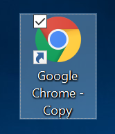

Setup
Basic
- Install the extension.
Isolated
This is for if you want your Warframe windows seperated from the rest of your chrome windows.
- Make a new shortcut to chrome on your desktop.

- Open properties of shortcut.

- Append
--profile-directory=AutoTwitch to the Target text box.

- Press apply.
- Run the shortcut, open this page in the new window, and install the extension.
Running
- Open a new window. Use the custom shortcut if you did the isolated section.
- Go to:
https://kylewill0725.github.io/blank.html?start
- The extension icon should turn blue when running. When done, just close the window.